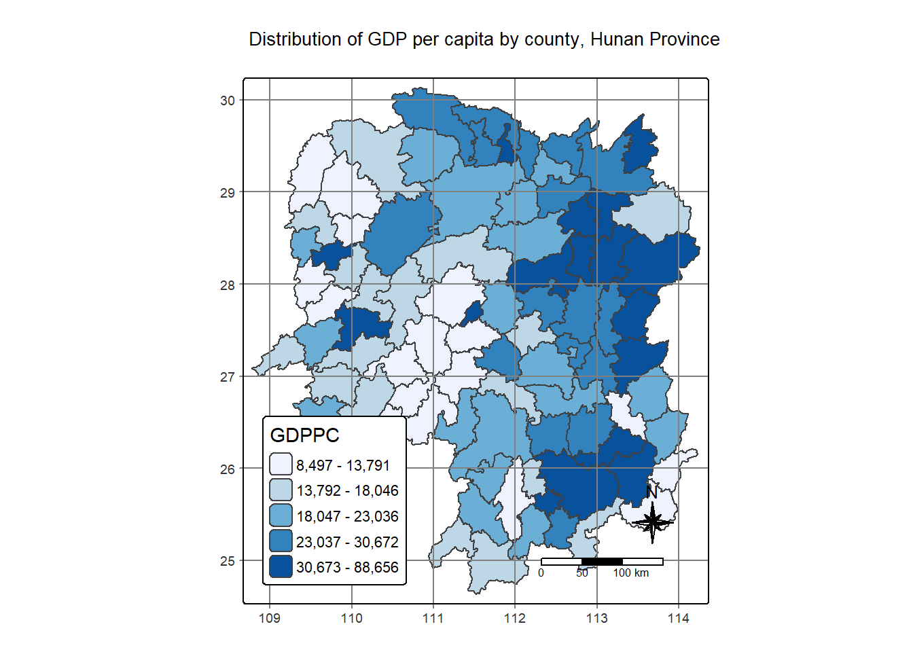
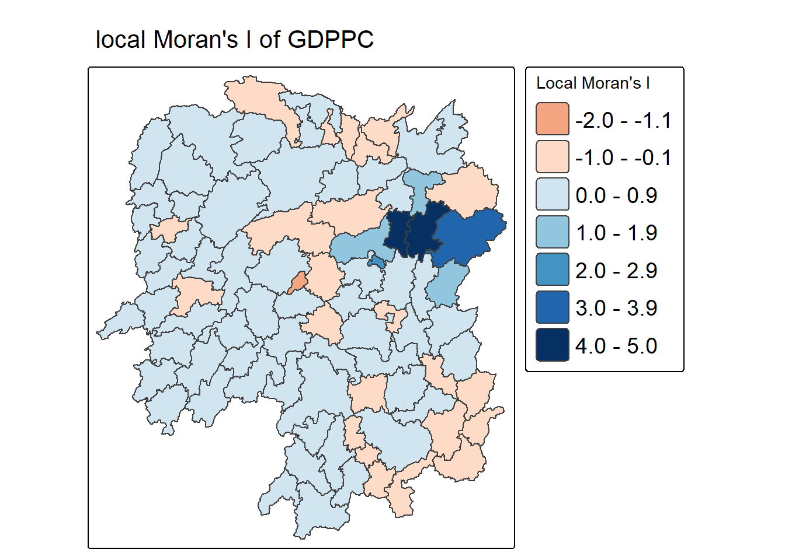
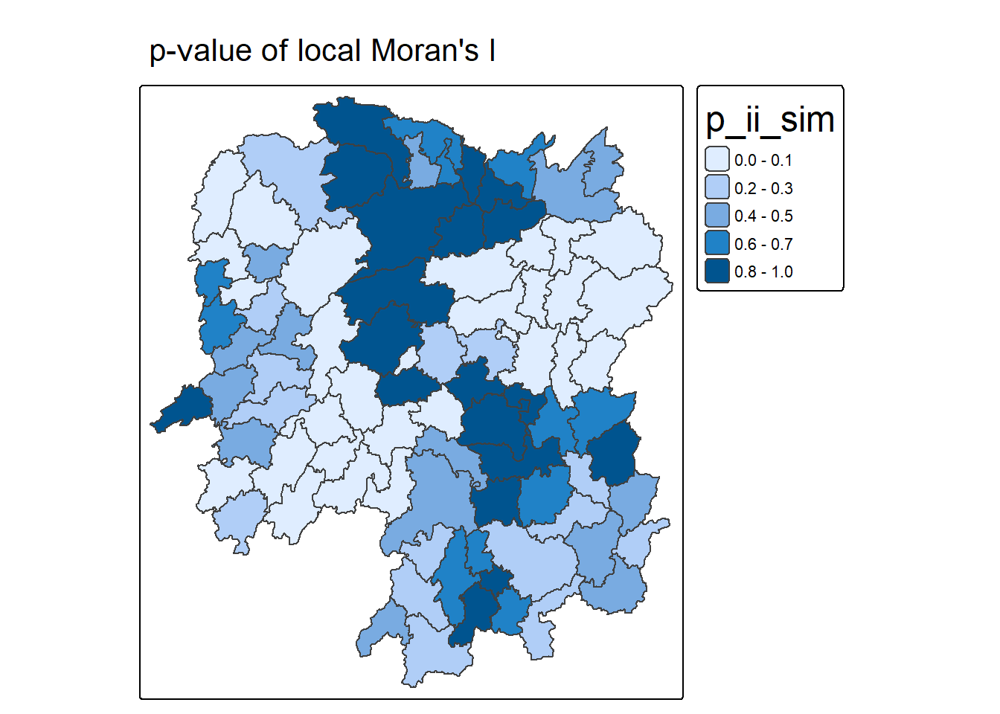
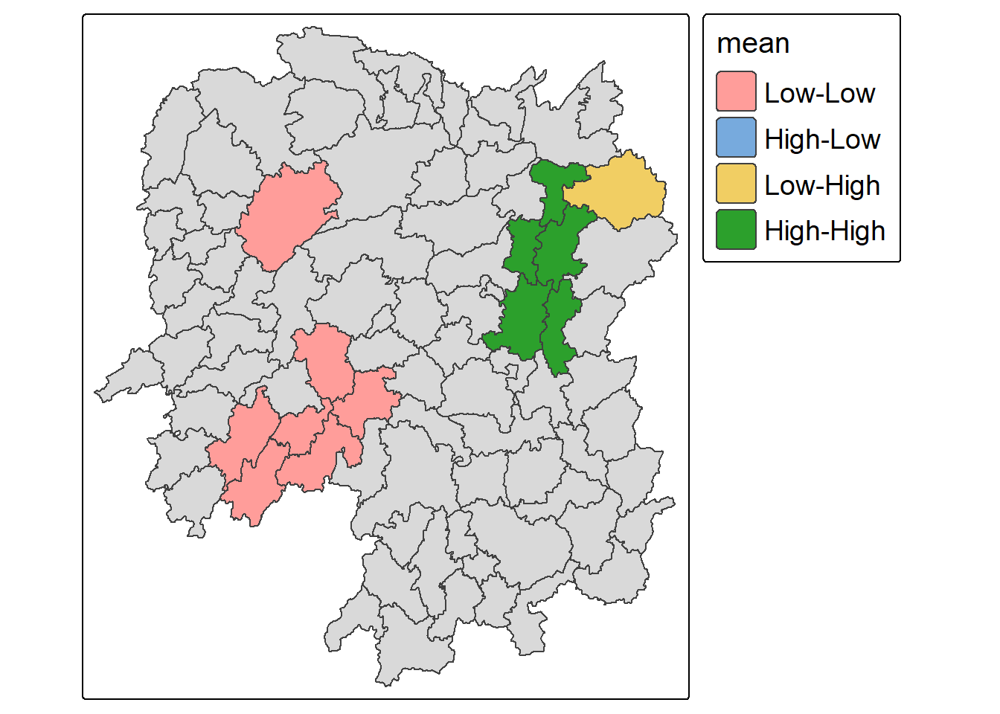
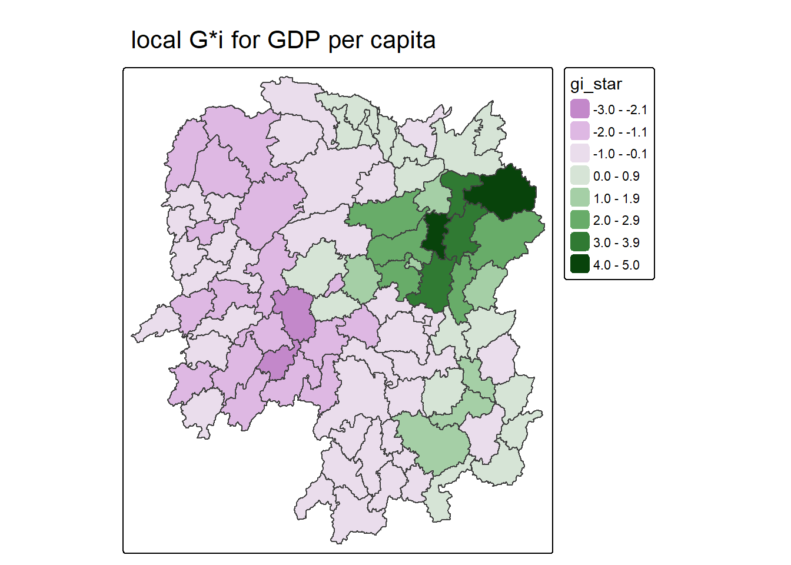
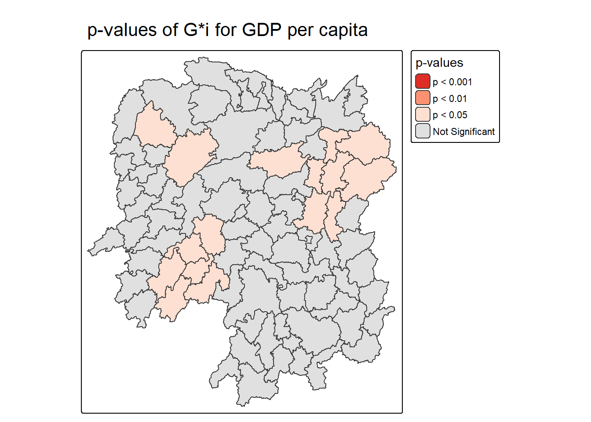
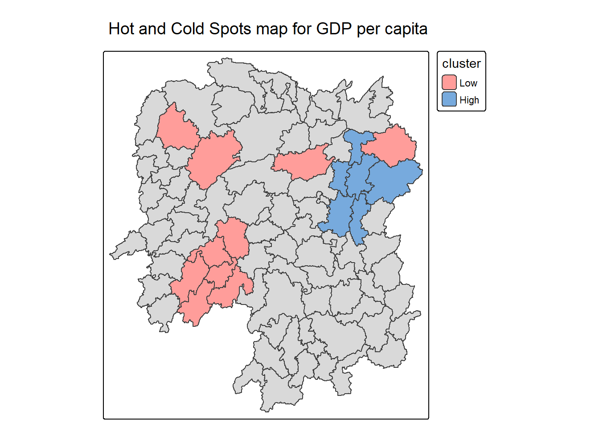

pacman::p_load(sf, sfdep, tmap, tidyverse)Is GDP per capita in Hunan clustered, and if so, where? This time I answer that question with sfdep instead of spdep.
1 Exercise Reference
NoteAbout the code on this page
The code is copied unchanged from the slides above. The explanations and the notes after each result are mine.
2 Overview
In Hands-on Exercise 5, I measured the spatial autocorrelation of GDP per capita in Hunan with spdep. Here I repeat the main steps with sfdep.
Notesfdep vs spdep
spdep is the older package. It has the spatial weights and the global and local statistics used here, but it was designed around the Spatial* classes from sp, and its functions pass separate objects around.
sfdep works directly with sf data frames. Neighbour lists and weights are stored as list columns, so I can create them with mutate() inside a normal pipe. It is an sf and tidyverse friendly interface to spdep, and it also adds a few functions that spdep does not have.
3 Learning Outcome
- Build contiguity and inverse distance weights with sfdep.
- Test for global spatial autocorrelation with Moran’s I, including a permutation test.
- Map local Moran’s I to find clusters and outliers.
- Map local Gi* to find hot spots and cold spots.
4 Import the R Packages
| Package | What it does | How I use it here |
|---|---|---|
| sf | Reads and handles vector spatial data. | Importing the Hunan county boundaries. |
| sfdep | Spatial dependence statistics for sf objects. | Spatial weights, Moran’s I, local Moran’s I and Gi*. |
| tmap | Thematic maps. | Mapping GDPPC and the results. |
| tidyverse | Data import and wrangling. | Reading the CSV and joining it to the boundaries. |
5 The Data
Both data sets cover the 88 counties of Hunan.
| Data set | Description | Format |
|---|---|---|
| Hunan | County boundaries of Hunan Province. | ESRI Shapefile |
| Hunan_2012 | Selected local development indicators for 2012. | CSV |
5.1 Importing the geospatial data
hunan <- st_read(dsn = "data/geospatial",
layer = "Hunan")Reading layer `Hunan' from data source
`D:\smu\study\GIS\In-class_Ex\In-class_Ex05\data\geospatial'
using driver `ESRI Shapefile'
Simple feature collection with 88 features and 7 fields
Geometry type: POLYGON
Dimension: XY
Bounding box: xmin: 108.7831 ymin: 24.6342 xmax: 114.2544 ymax: 30.12812
Geodetic CRS: WGS 84
Tip
The layer has 88 counties stored as polygons, in WGS 84 longitude and latitude.
5.2 Importing the attribute table
hunan2012 <- read_csv("data/aspatial/Hunan_2012.csv")5.3 Combining both data frames by using left join
hunan_GDPPC <- left_join(hunan, hunan2012) %>%
select(1:4, 7, 15, 33)
Note
left_join() matches the two tables on County, the only column they share, so a county has to be spelled the same way in both. select() then keeps seven columns: NAME_2 (the city), ID_3, NAME_3, ENGTYPE_3, County, GDPPC and Disp_Inc, plus the geometry.
Important
The sf data frame (hunan) has to be on the left of the join. Otherwise the result is no longer an sf object.
6 Visualising Choropleth Map of GDPPC of Hunan
Before any statistics, a quantile map gives a first look at how GDPPC varies across the province.
tmap_mode("plot")
tm_shape(hunan_GDPPC) +
tm_polygons(fill = "GDPPC",
fill.scale = tm_scale_intervals(
style = "quantile",
values = "brewer.blues")) +
tm_title("Distribution of GDP per capita by county, Hunan Province") +
tm_borders(fill_alpha = 0.5) +
tm_compass(type="8star", size = 2) +
tm_scalebar() +
tm_grid(fill_alpha =0.2) +
tm_layout(legend.position = c("left", "bottom"))
7 Global Measures of Spatial Association
7.1 Deriving Queen’s contiguity weights: sfdep methods
Queen contiguity counts two counties as neighbours if they share an edge or a corner. st_contiguity() builds the neighbour list, st_weights() turns it into weights, and .before = 1 puts both new columns at the front of the table.
wm_q <- hunan_GDPPC %>%
mutate(nb = st_contiguity(geometry),
wt = st_weights(nb,
style = "W"),
.before = 1)
Tip
st_weights() has three arguments:
nb: the neighbour list fromst_contiguity().style: how the weights are coded. The default"W"row-standardises them, so each county’s weights add up to one. The other options are"B"(binary),"C"(globally standardised),"U"(C divided by the number of neighbours),"minmax"and"S"(the variance-stabilising scheme from Tiefelsdorf et al. 1999, p. 167-168).allow_zero: ifTRUE, a county with no neighbours gets a lagged value of zero.
It is worth opening wm_q after this step to check the new columns.
7.2 Computing Global Moran’s I
global_moran() computes the statistic on its own, without a test.
moranI <- global_moran(wm_q$GDPPC,
wm_q$nb,
wm_q$wt)
glimpse(moranI)List of 2
$ I: num 0.301
$ K: num 7.64
Tip
The result is a plain list, so the values are easy to pull out with $. I is Moran’s I and K is the sample kurtosis of GDPPC.
8 Performing Global Moran’s I Test
The statistic alone does not say whether 0.301 could have happened by chance. global_moran_test() adds a p-value.
global_moran_test(wm_q$GDPPC,
wm_q$nb,
wm_q$wt)
Moran I test under randomisation
data: x
weights: listw
Moran I statistic standard deviate = 4.7351, p-value = 1.095e-06
alternative hypothesis: greater
sample estimates:
Moran I statistic Expectation Variance
0.300749970 -0.011494253 0.004348351
Tip
alternativesets the direction of the test:"two.sided","greater"or"less". The output above is a one-sided test (alternative hypothesis: greater).randomization = TRUEis the default and computes the variance under randomisation. WithFALSE, the test assumes normality instead.
NoteWhat I see
Moran’s I is 0.301 and the p-value is 1.095e-06. Counties with similar GDP per capita tend to sit next to each other, and a pattern this strong is very unlikely to be chance.
9 Performing Global Moran’s I Permutation Test
A permutation test relies less on assumptions. It shuffles the GDPPC values across the counties many times and recomputes Moran’s I after each shuffle. In sfdep this is global_moran_perm(). I set a seed first so that the shuffles are the same every time the page is rendered.
set.seed(1234)
global_moran_perm(wm_q$GDPPC,
wm_q$nb,
wm_q$wt,
nsim = 99)
Monte-Carlo simulation of Moran I
data: x
weights: listw
number of simulations + 1: 100
statistic = 0.30075, observed rank = 100, p-value < 2.2e-16
alternative hypothesis: two.sided
Tip
nsim = 99 gives 100 values of Moran’s I in total: 99 from the shuffles plus the observed one.
NoteWhat I see
The observed Moran’s I ranks 100th out of 100, so none of the shuffled maps is as clustered as the real one. The p-value is well below 0.05, so I reject the null hypothesis that GDPPC is spread randomly across space.
Moran’s I is positive, which means the pattern is clustering: richer counties sit next to richer counties, and poorer ones next to poorer ones.
10 Local Measures of Spatial Association
10.1 Computing Local Moran’s I
The global test says that clustering exists. Local Moran’s I gives one value per county, which shows where the clustering is.
lisa <- wm_q %>%
mutate(local_moran = local_moran(
GDPPC, nb, wt, nsim = 99),
.before = 1) %>%
unnest(local_moran)
Tip
local_moran() returns a small data frame for each county, all stored in one list column. unnest() spreads them out into ordinary columns so they can be filtered and mapped.
These are the new columns:
ii: the local Moran’s I.eii: its expected value. For the permutation version, this is the mean of the simulated values.var_ii: its variance, also taken from the simulated values.z_ii: the standard deviate, based on the mean and standard deviation of the simulations.p_ii: a p-value computed fromz_iiwith the normal distribution (pnorm()).p_ii_sim: a p-value from the rank of the observed value among the simulations.p_folded_sim: the same rank-based p-value folded into the 0 to 0.5 range, following pysal’s esda.skewnessandkurtosis: the shape of the simulated values, frome1071.mean,medianandpysal: each county’s cluster or outlier label, under three different rules for deciding what counts as high or low.
10.2 Visualising Local Moran’s I
tmap_mode("plot")
tm_shape(lisa) +
tm_polygons(fill = "ii",
fill.scale = tm_scale_intervals(
style = "fixed",
breaks = c(
-2, -1, 0, 1, 2, 3, 4, 5),
values = "brewer.rd_bu"),
fill.legend = tm_legend(
title = "Local Moran's I")) +
tm_borders(fill_alpha = 0.5) +
tm_view(set_zoom_limits = c(6,8)) +
tm_title("local Moran's I of GDPPC") +
tm_layout(legend.text.size = 1.2)
10.3 Visualising p-value of Local Moran’s I
tmap_mode("plot")
tm_shape(lisa) +
tm_polygons(fill = "p_ii_sim") +
tm_borders(fill_alpha = 0.5) +
tm_title("p-value of local Moran's I") +
tm_layout(legend.title.size = 1.5)
Warning
This map uses tmap’s default classes. For p-values, the cut-offs that matter are 0.001, 0.01 and 0.05, so it is better to set those classes by hand. The Gi* p-value map later on does this.
NoteWhat I see
The largest positive values are in the northeast around Changsha, where counties with high GDPPC have neighbours with high GDPPC. The negative values are small and scattered. Those counties differ from the counties around them.
A large value on the first map is not automatically significant, so I read the two maps together.
11 LISA Map
A LISA map puts each significant county into one of four groups. High-High and Low-Low are clusters. High-Low and Low-High are outliers, meaning a county that differs from its neighbours. The map combines each county’s local Moran’s I with its p-value.
11.1 Plotting LISA Map
lisa has three columns with these labels: mean, median and pysal. The usual choice is mean. Only counties with p_ii_sim below 0.05 get a colour.
lisa_sig <- lisa %>%
filter(p_ii_sim < 0.05)
tmap_mode("plot")
tm_shape(lisa) +
tm_polygons() +
tm_borders(fill_alpha = 0.5) +
tm_shape(lisa_sig) +
tm_polygons(fill = "mean",
fill.legend = tm_legend(
text.size = 1.15,
width = 6)) +
tm_borders(fill_alpha = 0.4) +
tm_layout(legend.title.size = 1.25)
NoteWhat I see
Five counties form the High-High cluster, running north to south through Changsha, Xiangtan, Zhuzhou and Yueyang. Seven counties are Low-Low: six in Shaoyang in the southwest and one in Huaihua.
One county in Yueyang is a Low-High outlier. Its GDPPC is low, but it sits right next to the High-High cluster. No county is a significant High-Low outlier.
12 Hot Spot and Cold Spot Area Analysis (HCSA)
HCSA looks for groups of high values (hot spots) or low values (cold spots) that sit close together, and tests whether each group is statistically significant. Spatial weights define what “close” means. The areas are usually administrative boundaries or a regular grid.
12.1 Computing local Gi* statistics
Gi* needs its own weights matrix. The code below builds it with sfdep, in the tidyverse style.
wm_idw <- hunan_GDPPC %>%
mutate(nb = include_self(
st_contiguity(geometry)),
wts = st_inverse_distance(nb,
geometry,
scale = 1,
alpha = 1),
.before = 1)
Tip
- Gi* is a distance-based statistic, so the weights come from inverse distance rather than plain contiguity, and nearer neighbours count more.
include_self()adds each county to its own neighbour list, because Gi* includes the county’s own value.
Next, local_gstar_perm() computes Gi* for each county, using 99 permutations for the p-values.
HCSA <- wm_idw %>%
mutate(local_Gi = local_gstar_perm(
GDPPC, nb, wts, nsim = 99),
.before = 1) %>%
unnest(local_Gi)12.2 Visualising Gi*
A positive Gi* means a county and its neighbours have high values together. A negative Gi* means they have low values together.
tmap_mode("plot")
tm_shape(HCSA) +
tm_fill("gi_star") +
tm_borders(fill_alpha = 0.5) +
tm_view(set.zoom.limits = c(6,8)) +
tm_title(
"local G*i for GDP per capita")
12.3 Visualising p-value of local Gi*
This time the p-values are grouped into p < 0.001, p < 0.01, p < 0.05 and not significant.
tmap_mode("plot")
tm_shape(HCSA) +
tm_polygons(
fill = "p_sim",
fill.scale = tm_scale_intervals(
breaks = c(0, 0.001, 0.01, 0.05, 1.0),
labels = c("p < 0.001", "p < 0.01", "p < 0.05", "Not Significant"),
values = c("#de2d26", "#fc9272", "#fee0d2", "#e0e0e0")),
fill.legend = tm_legend(
title = "p-values")
) +
tm_title("p-values of G*i for GDP per capita") +
tm_borders(fill_alpha = 0.5)
12.4 Visualising hot spot and cold spot areas
Finally, I keep only the counties with p_sim below 0.05 and colour them by cluster.
HCSA_sig <- HCSA %>%
filter(p_sim < 0.05)
tmap_mode("plot")
tm_shape(HCSA) +
tm_polygons() +
tm_borders(fill_alpha = 0.5) +
tm_shape(HCSA_sig) +
tm_polygons(fill = "cluster") +
tm_borders(fill_alpha = 0.4) +
tm_title("Hot and Cold Spots map for GDP per capita")
NoteWhat I see
There are six hot spots, in Changsha, Xiangtan, Zhuzhou and Yueyang. This is the same area as the High-High cluster from local Moran’s I.
There are ten cold spots. Six are in Shaoyang, where the Low-Low cluster was. The other four are single counties in Huaihua, Xiangxi, Yiyang and Yueyang.
Gi* finds more cold spots than LISA found Low-Low counties. Its weights are different (inverse distance, with each county counted as its own neighbour), so I would not expect the two methods to match exactly.
The tutorial reports eight cold spots rather than ten. local_gstar_perm() shuffles the values at random, and the slides do not set a seed before it, so counties close to p = 0.05 can fall on either side from one run to the next.